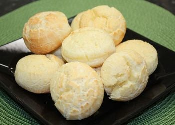
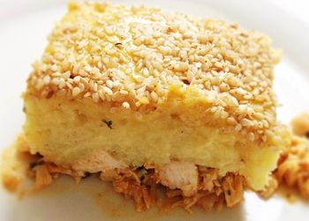
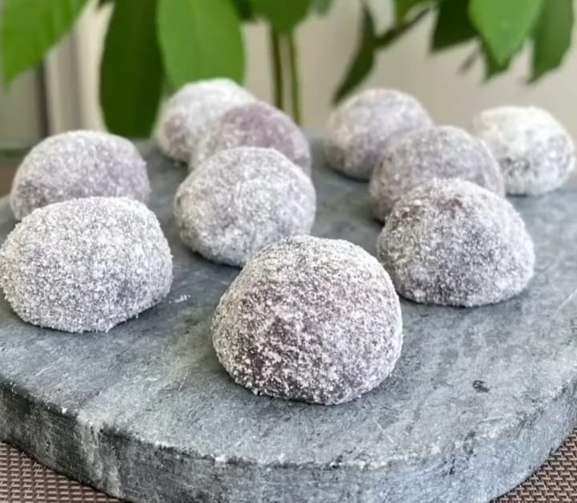

Pão de Queijo Light
INGREDIENTES:
• 250 g de batata cozida e amassada
• 200 g de queijo meia cura ralado
• 3 ovos
• 2 xícaras de chá de polvilho doce
• Sal a gosto
MODO DE PREPARO:
• Misture os ingredientes e faça bolinhas.
• Asse em forno médio baixo (150° graus) pré-aquecido
Escondidinho de Batata Doce com Frango
INGREDIENTES:
• 1 kg de batata doce cozida e espremida
• 1 kg de peito de frango cozido e desfiado
• Temperos a gosto (sal, alho, cebola, orégano, pimenta cayena, páprica doce e cheiro verde picadinho)
• 2 colheres de sopa de farinha de coco (ou outra farinha da sua escolha)
• 4 colheres de sopa requeijão
• 1 gema de ovo
• 100 g de queijo parmesão
• 2 colheres de sopa de gergelim para confeitar
MODO DE PREPARO:
• Misture com as batatas cozidas a farinha e o requeijão (pode ser com o fogo desligado).
• Depois coloque em um refratário grande de vidro uma camada de frango e outra de batata.
• Espalhe a gema por cima com as costas de uma colher de sopa e salpique gergelim.
• Derrame o queijo parmesão por toda a massa.
• Leve ao forno por 20 minutos e depois sirva ainda quente.
Doce de Banana
INGREDIENTES:
• 2 bananas bem maduras (de preferência nanica ou caturra)
• 2 colheres de sopa de cacau em pó 100%
• 5 colheres de sopa cheias de leite em pó (uso ninho integral) ou leite de coco em pó.
MODO DE PREPARO:
• Descasque as bananas e leve ao microondas por 2 minutos.
• Amasse as bananas com um garfo e misture o cacau e o leite em pó aos poucos. Misture muito bem!
• A consistência fica de um brigadeiro de colher.
• A quantidade de leite em pó pode variar de acordo com o tamanho das bananas. Se necessário, coloque mais leite em pó.
• Leve ao freezer por 1 hora até firmar.
• Enrole as bolinhas e passe no leite em pó!
